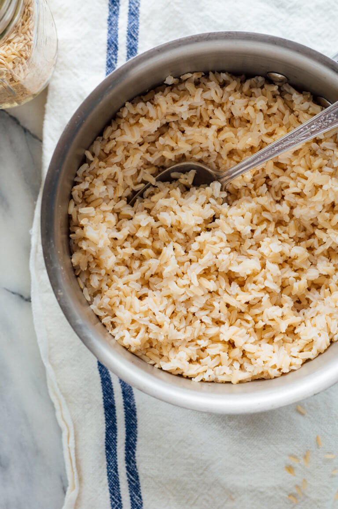

Easy Brown Rice

Description
Here's the only recipe you need to make perfect brown rice every time! This healthy whole grain is great on its own
as a side dish, or use it in your favorite recipes calling for cooked brown rice.
Ingredients
- 3 cups water or broth
- 1 cup brown rice
Steps
- Combine water (or broth) and rice in a medium saucepan. Bring to a boil. Reduce heat to low, cover and simmer
until tender and most of the liquid has been absorbed, 40 to 50 minutes. Let stand 5 minutes, then fluff with a
fork.